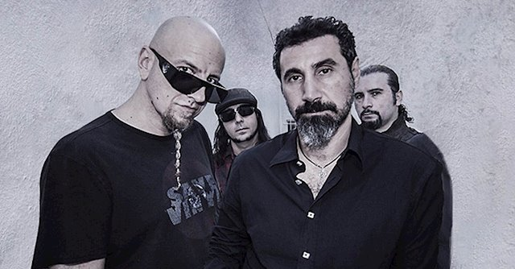

La primera grabación de la banda se cree que fue un demo que contenía dos canciones: Flake y Toast. El primer demo no oficial es conocido como "The Untitled Demo Tape", que contenía los temas P.I.G. (demo de Mr. Jack), la primera versión de The Metro (cover del grupo Berlin), Flake y Toast. Otros temas que también se cree que fueron grabados en ese tiempo son Roulette, 36 y X, que después serían usados lanzamientos oficiales de System, además de Friik, Blue, Storaged y Marmalade. En 1995 la banda lanzó su primer demo oficial, éste tenía muy baja calidad y solo era vendido en sus presentaciones. El demo contenía Dam, Sugar, Suite-Pee y P.L.U.C.K., estas 3 últimas fueron utilizadas en el primer álbum homónimo de la banda. La banda seguía dando conciertos y escribiendo nuevo material, y en 1996 salió a la luz su segundo demo. Este tenía mucha mejor calidad que el anterior, y contenía las canciones Honey, Temper y Soil. La última fue utilizada para el primer álbum en 1998, las otras dos nunca fueron regrabadas, pero existen diversas versiones en vivo. En 1997 la banda grabó su tercer demo, que contenía Peephole, Know y War. Existe otra versión promocional de este demo, que estuvo a la venta sólo unos días y muy poca gente compró. La diferencia es que éste demo contenía una canción más, que no había sido listada, al parecer durante la grabación del demo fue como una "improvisación". Esta canción se filtró en Internet apenas en 2009, cuando un fan la descubrió y decidió compartir la noticia. La canción es conocida como "The Missing Song"
En agosto de 2009, Slipknot ganó dos premios Kerrang!, mejor banda en directo, y mejor banda internacional. Fue confirmado por Corey que la banda se tomaría otro breve descanso después de All Hope Is Gone World Tour, para que pueda volver a grabar con Stone Sour y también para trabajar en su álbum en solitario. El 17 de septiembre Clown reveló que estaba escribiendo un libro titulado The Apocalyptic Nightmare Journey, donde relata su relación con la banda, aunque no hay fecha oficial de puesta en venta. También ha expuesto en su propia galería de arte, donde están a la venta sus cuadros y fotografías Slipknot ha confirmado una actuación en la primera celebración anual Trinity of Terrors, que tendrá lugar en el Palms Resort Casino el 31 de octubre (coincidiendo con Halloween). El 24 de mayo de 2010, el bajista Paul Gray fue encontrado muerto, a causa de una sobredosis accidental de morfina, alrededor de las 10:50 a. m. en una habitación de un hotel de Des moines en el estado de Iowa, Estados Unidos. Durante una entrevista antes del debut de la banda en Sonisphere en los Países Bajos, el percusionista Chris Fehn declaró que el grupo estaba haciendo un nuevo álbum que será lanzado en 2010, aproximadamente. La banda también ha confirmado una nueva edición conmemorando el décimo aniversario de su homónimo álbum debut, que incluirá todas las pistas de la versión original, así como varias demos, remixes y la canción Purity. También saldrá a la venta un nuevo DVD, titulado Of the (Sic): Your Nightmares, Our Dreams, que contendrá material de 1999-2000.